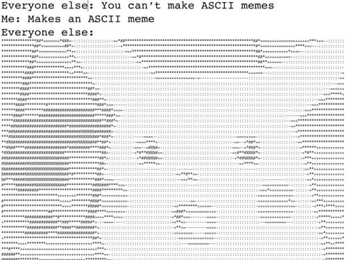

Ellie and your TAs are really looking forward to getting to know you this semester :)
In this assignment, we will ask you to get your computer set up, as well as get comfortable with the technologies that we are using in the course: Python, Github, and the Terminal/Command Prompt. It's important that all of this makes sense and works for you to make sure that you don't run into issues when we dive into the course content.
If you have questions, please ask your TAs! Office hours are listed on the website here.
This assignment is designed to take 2-3 hours to complete.
WYDZ2V. You'll be using Gradescope to submit your
assignments and to receive feedback and grades. (2 min)If you aren't familiar with Github or Github Classroom, read through the CS15 Github guide and set up a Github account. Then, read through the CS1430 guide (skipping the Branches section) to find out more about Github Classroom, and Github Desktop (if you perfer a visual way of interacting with Github over the command line). In this course, you will be using Github Classroom to get your stencil at the beginning of each assignment and to store all of your work. For the final project, you will use Github version control to collaborate with your final project group. These links will come in very handy for later parts of this assignment, and we recommend getting comfortable using Github - maybe starting with this Youtube video tutorial. (15-20 min)
Please follow the CS16 instructions here to set up (1) Python 3.7, (2) Java JDK8, and (3) a code editor of your choice (we recommend Visual Studio Code - VSCode). If you have any trouble setting up these technologies, please refer to the Sunlab consultants at consultants@cs.brown.edu.
We recommend making a course directory on your personal computer to keep all the directories of your projects in one place.
This is a good chance to practice with the Command Prompt/Terminal. If you have not had experience with the Command Prompt (Windows) or Terminal (MacOS, Linux) before, check out this resource for instructions for how to open the Terminal/Command Prompt. Also, check out this awesome resource (from CS15) on commands that are helpful.
Practice: Using your terminal, navigate to a directory in which you want to store all the work for this class. Then, use mkdir to create a folder named "1951A".
Navigate inside the folder "1951A", and print out the directory. This could look something like /Users/ndo3/Desktop/1951A (MacOS) if your folder is on your Desktop, for example.
It is important to install the Python Virtual Environment on your computer and run your Python programs for this course using our virtual environment so that you won't have do deal with many missing package errors in the course of the class.
Now that we are comfortable with navigating the terminal, let's use the terminal to set up the course's virtual environment.
First of all, let's get the stencil for this assignment. You can click here to get the stencil for this homework. Navigate to the directory that you created above to store all the folders for the projects in this class, and do git clone [LINK] (replacing [LINK] with the link to the Github repository that was just created for you - refer to the Github Classroom guide mentioned in 1.1).
You will be using these steps to get the stencil code for all the projects this semester, so if you do run into any issues with the process of getting the stencil files for this assignment, please reach out to us on Piazza so we can troubleshoot for you.
Using the terminal/command prompt, navigate inside the stencil directory that you just cloned to your computer. Using an ls command, you should be able to find the files create_venv.sh and requirements.txt in the directory.
which python3.7 and python3.7 --version. If the command which python3.7 does not print out a path-like string in your terminal, or if the command python3.7 --version does not print out Python 3.7.x, you may want to reach out to the Sunlab consultants to get help getting the set up correct.Second, in your terminal from your assignment directory, run chmod 775 create_venv.sh. Then, run ./create_venv.sh from your assignment directory.
If no error is printed out in your terminal besides the message "created cs1951a environment," congratulations! You have successfully installed the virtual environment for the course on your machine. If any error message is printed out, please utilize TA Hours / Piazza as a resource to resolve the issue(s).
From now on, whenever you want to activate your local virtual environment for our assignments, you can simply type cs1951a_venv or source /course/cs9151a/venv/bin/activate.
py -3.7 --version. From now on, whenever the assignment refers to a command that says python3.7 [some-file-name-here], you will run py -3.7 [some-file-name-here] instead.py -3.7 -m venv cs1951a_venv. This command should create a new directory called cs1951a_venv that contains your new virtual environment. Then, run C:\[PATH-TO-YOUR-REPOSITORY]\cs1951a_venv\Scripts\activate.bat (or, PS C:\[PATH-TO-YOUR-REPOSITORY]\cs1951a_venv\Scripts\Activate.ps1 in Powershell) to activate your virtual environment.(cs1951a_venv) to let you know that the virtual environment is now active.py -3.7 -m pip install --upgrade pip, then run py -3.7 -m pip install -r requirements.txt. Note that this must be done while your virtual environment is activated.On the department system, we have already configured a virtual environment that will be able to run all the code necessary for the course. If you have not set up SSH in the past, we recommend reaching out to the Sunlab consultants. You can also refer to the departmental guide to connect to SSH here.
Once you are on the department SSH, run the echo "alias cs1951a_venv='source /course/cs1951a/venv/bin/activate'" >> ~/.bashrc and source ~/.bashrc.
From now on, whenever you want to run your code on the department SSH, you can simply type cs1951a_venv to activate the course's virtual environment. Alternatively, you can also run source /course/cs1951a/venv/bin/activate.
If you are unsure about your Python experience level, you can check out the course's Python pre-quiz, as well as our list of Python resources on the resources page on the course website.
Additionally, we strongly recommend using CS16's Python Lab to get yourself comfortable with working in Python. All our assignments will be in Python, and so the more comfortable you are with Python, the better your experience learning the materials in this course will be.
We also recommend taking a look at the CS1430 Python Tutorial - sections Syntax with Whitespace and Debugging (and not anything else, as it will not be too relevant to the things that we're going to do in our course). You can also check out videos similar to this one to get more comfortable with Python.
While we unfortunately do not formally teach Python in this course, we will have Python/Terminal/Github hours for the first three weeks (subject to change) of the course to give you the support that you need on Python. Additionally, the hours on the course calendar (can be found on the course website) during the span of this assignment will be dedicated to supporting you with any Python questions that you have (in addition to your set up questions), so be sure to utilize our resources to get yourself the most comfortable with Python!
Refer to the file student.py in the stencil code that you pulled in Part 2.3. You are asked to do some quick Python exercises, just to make sure that everyone is familiar with Python syntax (and with submitting their work onto Gradescope and using the autograder). You are asked to do the following:
increment_each_by_one, add_odd_elements, filter_even_numbers)add_one_to_x, function_to_debug)my_np_array, my_pandas_table) to get comfortable with some Data Science tools that we will use beyond native Python types like listsWe have left comments in student.py to provide you with more details on what you need to do.
To run student.py and any Python file in the future, you can use python3.7 [file-name] (e.g., python3.7 student.py). If you are using windows, instead of python3.7, do py -3.7.
It is important that you run all the Python files in this course (including student.py) using the virtual environment. Please refer to Part 2 for instructions on how to set up and activate your virtual environment.
In student.py, we have also included some functions (check_mapreduce_installation_correct and plot_silly_graph), which are meant to evaluate whether you have set up Python, Java, and your virtual environment correctly. If you have any issues running these functions, or with any part in the coding component, please reach out for help at hours or on Piazza!
We do provide autograders for all homework assignments in this course. This means that you can just submit your code onto Gradescope, and Gradescope will run your code against our tests. After the tests have finished running, you can see the amount of points that you receive, in addition to the names of the tests that you passed/failed. This will come in handy when working on your homework assignments.
You can hand in as many times as you like onto Gradescope (and hence check your work as many times as you want), but submissions after the deadline of a homework will be marked as late. Please refer to the Handing in section to find instructions on how to hand in.
It is important to keep data ethics principles in mind as we navigate the world of Data Science this semester. Please check out this article to find out what data ethics mean, and why they are important and incredibly hard to achieve at the same time.
Fill out this form to help us with bookkeeping and getting to know you as we get started with the semester. The information provided in this form is crucial for us to assign you to weekly lab sessions, to match your work to your identity, and to determine how we should best allocate resources to support you this upcoming semester.
For this assignment, the concrete required deliverables are:
We do expect that you complete all the other tasks in this assignment (i.e. setting things up), as we will not deliver any additional support on setting things up after this assignment is due.
To submit your code from this assignment (and any assignment in the future) onto Gradescope, follow these steps:
python3 zip_assignment.py in the command line, and fix any issues brought up by the script.[HOMEWORK-NAME]-submission-1951A.zip (in this homework assignment, that would be getting-started-submission-1951A.zip). Please submit this zip file on Gradescope under the respective assignment.Made with ♥ by Nam, Julia, and Evan.